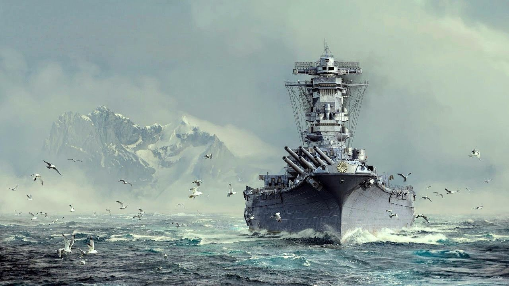

Линкор «Ямато»: Огневая мощь
Ямато был головным кораблем своего типа и самым тяжелым линкором из когда-либо построенных. Его главным калибром были девять 460-мм орудий — самые мощные пушки, установленные на корабле.

Ямато в свободном плавании(art)
Последний поход
В апреле 1945 года «Ямато» отправился в свой последний путь к острову Окинава. Корабль вступил в бой с сотнями американских самолетов, продемонстрировав невероятную живучесть.